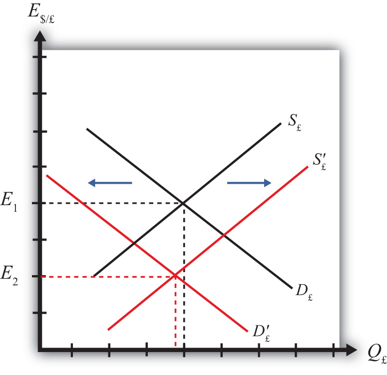
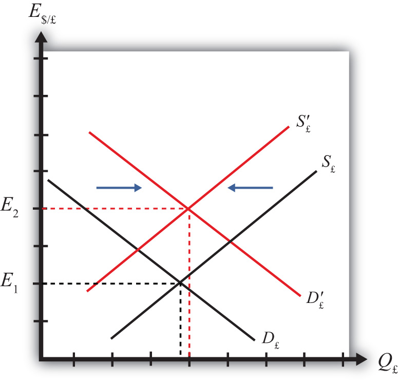

Comparative statics refers to an exercise in a model that assesses how changes in an exogenous variable will affect the values of the endogenous variables. The endogenous variables are those whose values are determined in the equilibrium. In the IRP model, the endogenous variables are the exchange rate value and—of lesser importance—the quantity of currencies exchanged on the Forex market. The exogenous variables are those whose values are given beforehand and are known by the model’s decision makers. In the IRP model, the exogenous variables are those that influence the positions of the rate of return curves, including the U.S. interest rate, the British interest rate, and the expected future exchange rate. Another way to describe this is that the endogenous variable values are determined within the model, while the exogenous variable values are determined outside of the model.
Comparative statics exercises enable one to answer a question like “What would happen to the exchange rate if there were an increase in U.S. interest rates?” When assessing a question like this, economists will invariably invoke the ceteris paribusMeans that all other exogenous variables are maintained at their original values when a change in one exogenous variable takes place. assumption. Ceteris paribus means that we assume all other exogenous variables are maintained at their original values when we change the variable of interest. Thus if we assess what would happen to the exchange rate (an endogenous variable) if there were an increase in the U.S. interest rate (an exogenous variable) while invoking ceteris paribus, then ceteris paribus means keeping the original values for the other exogenous variables (in this case, the British interest rate and the expected future exchange rate) fixed.
It is useful to think of a comparative statics exercise as a controlled economic experiment. In the sciences, one can test propositions by controlling the environment of a physical system in such a way that one can isolate the particular cause-and-effect relationship. Thus, to test whether a ball and a feather will fall at the same rate in a frictionless vacuum, experimenters could create a vacuum environment and measure the rate of descent of the ball versus the feather. In economic systems, such experiments are virtually impossible because one can never eliminate all the “frictions.”
However, by creating mathematical economic systems (i.e., an economic model), it becomes possible to conduct similar types of “experiments.” A comparative statics exercise allows one to isolate how a change in one exogenous variable affects the value of the equilibrium variable while controlling for changes in other variables that might also affect the outcome.
Suppose that the Forex is initially in equilibrium such that S£ = D£ at the exchange rate E1. Now let average U.S. interest rates (i$) rise, ceteris paribus. The increase in interest rates raises the rate of return on U.S. assets (RoR$), which at the original exchange rate causes the rate of return on U.S. assets to exceed the rate of return on British assets (RoR$ > RoR£). This will raise the supply of pounds on the Forex as British investors seek the higher average return on U.S. assets. It will also lower the demand for British pounds (£) by U.S. investors who decide to invest at home rather than abroad.
Figure 16.2 Effects of a U.S. Interest Rate Increase
Thus in terms of the Forex market depicted in Figure 16.2 "Effects of a U.S. Interest Rate Increase", S£ shifts right (black to red) while D£ shifts left (black to red). The equilibrium exchange rate falls to E2. This means that the increase in U.S. interest rates causes a pound depreciation and a dollar appreciation. As the exchange rate falls, RoR£ rises since . RoR£ continues to rise until the interest parity condition, RoR$ = RoR£, again holds.
Suppose that the Forex is initially in equilibrium such that S£ = D£ at the exchange rate E1 shown in Figure 16.3 "Effects of a British Interest Rate Increase". Now let average British interest rates (i£) rise, ceteris paribus. The increase in interest rates raises the rate of return on British assets (RoR£), which at the original exchange rate causes the rate of return on British assets to exceed the rate of return on U.S. assets (RoR£ > RoR$).
Figure 16.3 Effects of a British Interest Rate Increase
This will raise the demand for pounds on the Forex as U.S. investors seek the higher average return on British assets. It will also lower the supply of British pounds by British investors who decide to invest at home rather than abroad. Thus in terms of the graph, D£ shifts right (black to red) while S£ shifts left (black to red). The equilibrium exchange rate rises to E2. This means that the increase in British interest rates causes a pound appreciation and a dollar depreciation. As the exchange rate rises, RoR£ falls since . RoR£ continues to fall until the interest parity condition, RoR$ = RoR£, again holds.
Suppose that the Forex is initially in equilibrium such that S£ = D£ at the exchange rate E1. Now suppose investors suddenly raise their expected future exchange rate (E$/£e), ceteris paribus. This means that if investors had expected the pound to appreciate, they now expect it to appreciate more. Likewise, if investors had expected the dollar to depreciate, they now expect it to depreciate more. Also, if they had expected the pound to depreciate, they now expect it to depreciate less. Likewise, if they had expected the dollar to appreciate, they now expect it to appreciate less.
This change might occur because new information is released. For example, the British Central Bank might release information that suggests an increased chance that the pound will rise in value in the future.
The increase in the expected exchange rate raises the rate of return on British assets (RoR£), which at the original exchange rate causes the rate of return on British assets to exceed the rate of return on U.S. assets (RoR£ > RoR$). This will raise the demand for the pound on the Forex as U.S. investors seek the higher average return on British assets. It will also lower the supply of British pounds by British investors who decide to invest at home rather than abroad. Thus, as depicted in Figure 16.4 "Effects of a Change in the Expected Exchange Rate", D£ shifts right (black to red) while S£ shifts left (black to red). The equilibrium exchange rate rises to E2. This means that the increase in the expected exchange rate (E$/£e) causes a pound appreciation and a dollar depreciation.
Figure 16.4 Effects of a Change in the Expected Exchange Rate
This is a case of self-fulfilling expectations. If investors suddenly think the pound will appreciate more in the future and if they act on that belief, then the pound will begin to rise in the present, hence fulfilling their expectations.
As the exchange rate rises, RoR£ falls since . RoR£ continues to fall until the interest parity condition, RoR$ = RoR£, again holds.
Consider the economic changes listed along the left column of the following table. Indicate the effect of each change on the variables listed in the first row. Use insights from the interest rate parity model to determine the answers. Assume floating exchange rates. You do not need to show your work. Use the following notation:
+ the variable increases
− the variable decreases
0 the variable does not change
A the variable change is ambiguous (i.e., it may rise, it may fall)
| U.S. Dollar Value | E$/€ | |
|---|---|---|
| a. A decrease in U.S. interest rates | ||
| b. An increase in expected U.S. economic growth that raises expected asset values | ||
| c. An expected increase in European stock values |
On February 5, 2004, the Wall Street Journal reported that Asian central banks were considering selling a significant share of their U.S. government bond holdings. It was estimated at the time that foreign central banks owned over $800 billion in U.S. Treasury bonds, or one-fifth of all U.S. federal government debt. Taiwan was considering using some of its foreign reserves to help its businesses purchase U.S. machinery.